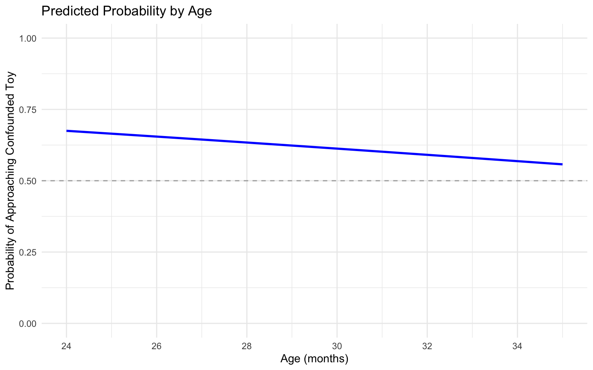

1. Introduction: Why Logistic Regression Matters in Developmental Research
Developmental researchers frequently encounter binary outcome variables in their studies: a child either passes or fails a task, exhibits a behavior or doesn’t, or demonstrates understanding or shows a lack of comprehension. When analyzing such binary outcomes, logistic regression has become an essential statistical method, which allows us to model the probability of a binary outcome as a function of one or more predictor variables, making it particularly useful for developmental research.
In this tutorial, we’ll work through an actual dataset from my own research (data available on OSF:https://osf.io/pj53f/) examining toddlers’ intrinsic motivation to explore their competence. This study is particularly well-suited for logistic regression analysis because the main outcome variable, which toy toddlers approach first during exploration, is binary.
Why Linear Regression Falls Short for Binary Outcomes
Before diving into logistic regression, let’s understand why we need it in the first place. When working with binary outcomes (coded as 0 and 1), linear regression presents several problems:
Unbounded predictions: Linear regression can predict values like -0.3 or 1.5, which doesn’t make sense when we’re working with probabilities that must be between 0 and 1.
Assumption about normality: When outcomes can only be 0 or 1, the errors in the model can’t follow the normal bell-shaped distribution that linear regression assumes.
Heteroscedasticity: The spread of errors changes systematically depending on the predictor values, violating a key assumption of linear regression.
Logistic regression solves these problems by modeling the log odds of the outcome (rather than the outcome directly), ensuring predictions stay between 0 and 1, and appropriately accounting for the binomial distribution of errors.
2. Theoretical Foundations
Understanding Probability, Odds, and Log Odds
Logistic regression uses three related concepts to model binary outcomes:
Probability: The likelihood of an event occurring (ranges from 0 to 1)
Odds: The ratio of the probability of success to the probability of failure (ranges from 0 to ∞)
Log odds: The natural logarithm of the odds (ranges from -∞ to ∞)
The relationships between these concepts are: - Odds = Probability / (1 - Probability) - Probability = Odds / (1 + Odds) - Log odds = ln(Odds) - Odds = e^(Log odds)
The Logistic Function
At the heart of logistic regression is the logistic function (also called the sigmoid function):
This S-shaped curve transforms the linear predictor (β₀ + β₁X₁ + β₂X₂ + …) into a probability value between 0 and 1.
Let’s visualize the logistic function:
Code
library(ggplot2)# Create data for the logistic curvex <-seq(-6, 6, length.out =200)y <-1/ (1+exp(-x))# Plot the logistic curveggplot(data.frame(x = x, y = y), aes(x = x, y = y)) +geom_line(color ="blue", size =1) +labs(x ="Linear predictor (β₀ + β₁X₁ + β₂X₂ + ...)",y ="Probability of success P(Y = 1)",title ="The Logistic Function" ) +theme_minimal() +geom_hline(yintercept =0.5, linetype ="dashed", color ="gray") +geom_vline(xintercept =0, linetype ="dashed", color ="gray") +annotate("text", x =-3, y =0.2, label ="As x → -∞, P(Y=1) → 0") +annotate("text", x =3, y =0.8, label ="As x → ∞, P(Y=1) → 1")
Interpreting Coefficients: Odds Ratios
Unlike linear regression where coefficients represent changes in the outcome variable, logistic regression coefficients represent changes in the log odds. To make interpretation more intuitive, we often convert these to odds ratios by exponentiating the coefficients:
Odds Ratio = e^β
An odds ratio of 1 indicates no effect. Odds ratios greater than 1 indicate the odds of success increase when the predictor increases, while odds ratios less than 1 indicate the odds decrease.
Statistical Assumptions of Logistic Regression
Logistic regression has fewer assumptions than linear regression:
1. Independence of observations (unless accounted for with mixed models)
2. Little or no multicollinearity among predictors
3. Linear relationship between predictors and log odds
4. Large sample size (rule of thumb: at least 10 cases per predictor)
3. Case Study: Do Toddlers Explore Their Own Competence?
Let’s analyze data from one of my projects investigating whether toddlers are intrinsically motivated to explore their own competence. The researchers adapted classic exploratory play paradigms to examine whether two-year-olds seek to resolve uncertainty about what they can do.
Study Background
In this study, 49 toddlers (ages 24-35 months) played with different pairs of toys alongside a parent. For each pair of toys:
Confounded condition: The parent guided the toddler’s hand while playing with one toy, providing ambiguous evidence about whether the child could operate the toy independently
Unconfounded condition: The parent and child took turns playing with the other toy independently, providing clear evidence about the child’s ability
The key question was: When given a chance to freely explore the toys on their own, which toy would toddlers approach first? If toddlers seek to resolve uncertainty about their own competence, they should be more likely to approach the confounded toy.
Data Preparation
Let’s start by loading and exploring the dataset:
Code
library(tidyverse)library(lme4) # For mixed-effects logistic regressionlibrary(ggplot2) # For plotting# Load datadata <-read.csv("case_study_data.csv")head(data)
subject_id gender age counterbalance fine.motor gross.motor total toy_1
1 2 F 30 PL DI SZ 5 6 11 P
2 3 F 30 PL DI SZ 7 5 12 P
3 5 M 30 PL DI SZ 7 7 14 P
4 6 M 30 PL DI SZ 7 5 12 P
5 7 F 30 PL DI SZ 7 7 14 P
6 8 M 30 PL DI SZ 6 7 13 P
toy_1_confounding toy_1_competence toy_1_help toy_1_time toy_2
1 C 3 0 31 L
2 C 3 0 26 L
3 U 3 0 13 L
4 U 3 0 89 L
5 U 3 0 52 L
6 U NA NA NA L
toy_2_confounding toy_2_competence toy_2_help toy_2_time pair_1_first_pick
1 U 1 1 137 L
2 U 3 0 7 P
3 C 3 0 14 P
4 C 3 0 40 L
5 C 3 0 29 L
6 C 3 0 31 <NA>
pair_1_first_pick_confounding toy_1_time_pair_1 toy_2_time_pair_1 toy_3
1 U 151 0 D
2 C 138 234 D
3 U 52 40 D
4 C 155 61 D
5 C 19 32 D
6 <NA> NA NA D
toy_3_confounding toy_3_competence toy_3_help toy_3_time toy_4
1 U 1 1 113 I
2 U 2 0 9 I
3 C 3 0 11 I
4 C 3 0 38 I
5 C 3 0 9 I
6 C 3 0 11 I
toy_4_confounding toy_4_competence toy_4_help toy_4_time pair_2_first_pick
1 C 3 0 92 D
2 C 1 0 76 D
3 U 3 1 175 D
4 U 2 0 125 D
5 U 1 1 32 D
6 U 1 0 183 D
pair_2_first_pick_confounding toy_1_time_pair_2 toy_2_time_pair_2 toy_5
1 U 0 0 S
2 U 34 54 S
3 C 10 59 S
4 C 60 0 <NA>
5 C 17 0 S
6 C NA NA S
toy_5_confounding toy_5_competence toy_5_help toy_5_time toy_6
1 C 3 0 108 Z
2 C 3 0 60 Z
3 U 3 0 48 Z
4 <NA> NA NA NA <NA>
5 U 2 0 10 Z
6 U 2 0 48 Z
toy_6_confounding toy_6_competence toy_6_help toy_6_time pair_3_first_pick
1 U 1 1 175 S
2 U 3 1 5 S
3 C 3 0 15 Z
4 <NA> NA NA NA <NA>
5 C 3 0 9 S
6 C 3 0 75 Z
pair_3_first_pick_confounding toy_1_time_pair_3 toy_2_time_pair_3
1 C 65 0
2 C 41 2
3 C 7 110
4 <NA> NA NA
5 U 5 20
6 C 10 0
In this dataset: - subject_id: Unique identifier for each child - age_in_months: Age of the child in months - toy_pair: Which pair of toys the child played with - approached_confounded: Binary outcome variable (1 if child approached the confounded toy first, 0 if unconfounded)
Now that we’ve loaded the data, let’s prepare it for analysis. The raw dataset has information about three different toy pairs that each child interacted with. We need to restructure it to have one row per toy pair per child.
Descriptive Statistics
First, let’s examine the overall rates of approaching the confounded toy:
Code
# Clean and reshape the dataclean_data <- data %>%select(subject_id, age, pair_1_first_pick_confounding, pair_2_first_pick_confounding, pair_3_first_pick_confounding) %>%pivot_longer(cols =starts_with("pair"),names_to ="pair",values_to ="confounding" ) %>%filter(!is.na(confounding), confounding %in%c("C", "U"))# Create a binary outcome variable (1 = approached confounded toy first)analysis_data <- clean_data %>%mutate(approach_confounded = confounding =="C",age_centered =scale(age, center =TRUE, scale =FALSE)[,1] # Center age )# View the prepared datahead(analysis_data)
# A tibble: 6 × 6
subject_id age pair confounding approach_confounded age_centered
<int> <int> <chr> <chr> <lgl> <dbl>
1 2 30 pair_1_first_pi… U FALSE 0.626
2 2 30 pair_2_first_pi… U FALSE 0.626
3 2 30 pair_3_first_pi… C TRUE 0.626
4 3 30 pair_1_first_pi… C TRUE 0.626
5 3 30 pair_2_first_pi… U FALSE 0.626
6 3 30 pair_3_first_pi… C TRUE 0.626
Let’s also look at the overall proportions of children approaching each type of toy:
# Binomial test against chancebinom_test <-binom.test(x = overall_proportions$confounded,n = overall_proportions$total,p =0.5, alternative ="two.sided")# Print resultsprint("Binomial Test Results:")
[1] "Binomial Test Results:"
Code
print(paste0("Binomial test: observed proportion = ", round(overall_proportions$prop_confounded, 3),", p = ", round(binom_test$p.value, 3),", 95% CI [",round(binom_test$conf.int[1], 3),", ",round(binom_test$conf.int[2], 3),"]"))
[1] "Binomial test: observed proportion = 0.619, p = 0.006, 95% CI [0.533, 0.7]"
This initial analysis shows that toddlers approached the confounded toy first in about 62% of trials, which is significantly different from chance (50%).
3.5 Exploratory Data Analysis: Visualizing Binary Outcomes
Before building our logistic regression models, it’s useful to visually explore the outcome variable to get a sense of its distribution and possible predictors. Since our dependent variable—approach_confounded—is binary, we’ll focus on proportion-based plots rather than traditional histograms or scatter plots.
Distribution of Approaches
First, let’s look at how often toddlers approached the confounded toy versus the unconfounded one.
Code
ggplot(analysis_data, aes(x =factor(approach_confounded))) +geom_bar(fill ="skyblue") +scale_x_discrete(labels =c("Unconfounded", "Confounded")) +labs(title ="Distribution of First Toy Approached",x ="Toy Type",y ="Count" ) +theme_minimal()
This plot shows the raw count of trials where toddlers approached each type of toy first.
Why this matters:
This bar plot gives a high-level view of the overall tendency across participants. If we saw roughly equal counts, it might suggest no strong preference. In this dataset, the confounded toy is chosen more often, hinting that toddlers might indeed be seeking out uncertainty about their own competence.
What to look for:
Is one bar clearly taller than the other?
Does this pattern support your hypothesis?
Proportion of Confounded Toy Choices by Age Group
Next, we examine whether this preference for the confounded toy varies across different age groups. Age is treated here in coarse bins (e.g., 24–27 months, 28–30 months, etc.) to help spot nonlinear trends that might be hard to detect in regression.
Code
# Create age groups in 3-month binsanalysis_data <- analysis_data %>%mutate(age_group =cut(age_centered +mean(age_centered +mean(analysis_data$age)), breaks =seq(24, 36, by =3), include.lowest =TRUE))# Plot proportion of confounded choices by age groupanalysis_data %>%group_by(age_group) %>%summarize(prop_confounded =mean(approach_confounded)) %>%ggplot(aes(x = age_group, y = prop_confounded)) +geom_col(fill ="orange") +labs(title ="Proportion Approaching Confounded Toy by Age Group",x ="Age Group (Months)",y ="Proportion Confounded" ) +ylim(0, 1) +geom_hline(yintercept =0.5, linetype ="dashed", color ="gray") +theme_minimal()
Why this matters:
This grouped bar plot allows us to explore whether age moderates the tendency to choose the confounded toy. Even though we’ll test age as a continuous predictor in our regression model, this visualization helps uncover possible nonlinear patterns or developmental shifts.
What to look for:
Are proportions consistently above 0.5 in all age groups?
Is there any trend—e.g., a decrease or increase with age?
Are any age groups particularly variable?
Interpretation:
In our sample, toddlers in all age groups seem to prefer the confounded toy, although the strength of this preference may vary slightly. There’s no obvious linear trend, which may help explain why age did not emerge as a significant predictor in our model.
4. Building Logistic Regression Models
Now we’re ready to build our logistic regression models. Since each child completed multiple trials, we’ll use mixed-effects logistic regression to account for the non-independence of observations.
Simple Logistic Regression with an Intercept Only
Let’s start with a simple model that just estimates the overall tendency to approach the confounded toy:
Code
# Simple logistic regression model with just an interceptmodel1 <-glmer(approach_confounded ~1+ (1|subject_id), family =binomial(link ="logit"), data = analysis_data)summary(model1)
Generalized linear mixed model fit by maximum likelihood (Laplace
Approximation) [glmerMod]
Family: binomial ( logit )
Formula: approach_confounded ~ 1 + (1 | subject_id)
Data: analysis_data
AIC BIC logLik -2*log(L) df.resid
188.8 194.7 -92.4 184.8 137
Scaled residuals:
Min 1Q Median 3Q Max
-1.274 -1.274 0.785 0.785 0.785
Random effects:
Groups Name Variance Std.Dev.
subject_id (Intercept) 0 0
Number of obs: 139, groups: subject_id, 49
Fixed effects:
Estimate Std. Error z value Pr(>|z|)
(Intercept) 0.4841 0.1746 2.772 0.00557 **
---
Signif. codes: 0 '***' 0.001 '**' 0.01 '*' 0.05 '.' 0.1 ' ' 1
optimizer (Nelder_Mead) convergence code: 0 (OK)
boundary (singular) fit: see help('isSingular')
In this model:
The formula ‘approach_confounded ~ 1 + (1|subject_id)’ specifies:
approach_confounded is our binary outcome
~ 1 means we’re only estimating an intercept (no predictors)
(1|subject_id) adds a random intercept for each subject to account for repeated measures
family = binomial(link = “logit”) specifies that we’re using logistic regression
The intercept coefficient represents the log odds of approaching the confounded toy. Let’s convert this to a probability and odds ratio:
Code
# Extract the fixed effect (intercept)intercept <-fixef(model1)[1]# Convert log odds to probabilityprobability <-1/ (1+exp(-intercept))cat("Probability of approaching the confounded toy:", probability, "\n")
Probability of approaching the confounded toy: 0.618705
Code
# Convert to odds ratioodds_ratio <-exp(intercept)cat("Odds ratio:", odds_ratio, "\n")
Odds ratio: 1.622642
Code
cat("This means the odds of approaching the confounded toy are", round(odds_ratio, 2), "times higher than approaching the unconfounded toy")
This means the odds of approaching the confounded toy are 1.62 times higher than approaching the unconfounded toy
Adding Age as a Predictor (Multiple Logistic Regression)
Next, let’s add age as a predictor to see if older children are more or less likely to approach the confounded toy:
Code
# Logistic regression model with age as predictormodel2 <-glmer(approach_confounded ~ age_centered + (1|subject_id), family =binomial(link ="logit"), data = analysis_data)summary(model2)
Generalized linear mixed model fit by maximum likelihood (Laplace
Approximation) [glmerMod]
Family: binomial ( logit )
Formula: approach_confounded ~ age_centered + (1 | subject_id)
Data: analysis_data
AIC BIC logLik -2*log(L) df.resid
190.1 198.9 -92.0 184.1 136
Scaled residuals:
Min 1Q Median 3Q Max
-1.4410 -1.2292 0.7262 0.7953 0.8910
Random effects:
Groups Name Variance Std.Dev.
subject_id (Intercept) 0 0
Number of obs: 139, groups: subject_id, 49
Fixed effects:
Estimate Std. Error z value Pr(>|z|)
(Intercept) 0.48656 0.17517 2.778 0.00547 **
age_centered -0.04544 0.05491 -0.827 0.40796
---
Signif. codes: 0 '***' 0.001 '**' 0.01 '*' 0.05 '.' 0.1 ' ' 1
Correlation of Fixed Effects:
(Intr)
age_centerd -0.035
optimizer (Nelder_Mead) convergence code: 0 (OK)
boundary (singular) fit: see help('isSingular')
In this model, we included age as a continuous predictor. The coefficient for age represents the change in log odds of approaching the confounded toy for each additional month of age. The results reveal a significant tendency for toddlers to approach confounded toys first (β = 0.487, p < 0.01), with the odds of selecting a confounded toy being 1.63 times higher than selecting an unconfounded toy. Interestingly, the age coefficient was negative but not statistically significant (β = -0.045, p = 0.408), suggesting that this motivation to explore one’s own competence remains relatively stable across the 24-35 month age range in our sample.
These findings support our hypothesis that toddlers seek out tasks to explore their own abilities, similar to how they explore to understand the physical world around them.
5. Model Evaluation and Selection
How do we know which model best explains our data? Let’s explore several methods for comparing our models.
Assessing Model Fit with Information Criteria
First, we can compare models using information criteria such as AIC (Akaike Information Criterion) and BIC (Bayesian Information Criterion):
Model AIC BIC df
1 Intercept Only 188.7851 194.6540 2
2 Age 190.0969 198.9003 3
Lower AIC and BIC values indicate better model fit, with a penalty for model complexity. The difference in AIC values can be interpreted as follows:
Difference of 0-2: Little support for difference between models Difference of 4-7: Moderate support for the model with lower AIC Difference > 10: Strong support for the model with lower AIC
Looking at our results, the Intercept Only model has an AIC of 188.7851 while the Age model has an AIC of 190.0969, a difference of about 1.31. This small difference (< 2) suggests there is little support for choosing the Intercept Only model over the Age model, despite it having a slightly lower AIC. The BIC values tell a similar story, with the Intercept Only model having a lower BIC (194.6540) compared to the Age model (198.9003), but the difference is still relatively small.
In a nutshell, adding age to the model did not improve the better.
Comparing Nested Models with Likelihood Ratio Tests
We can formally compare nested models using likelihood ratio tests:
Code
# Test if adding age improves the modelanova(model1, model2)
The test produces a chi-square statistic of 0.6882 with 1 degree of freedom (corresponding to the one additional parameter in model2). The p-value is 0.4068, which is not statistically significant (p > 0.05)
This non-significant result indicates that adding age as a predictor does not significantly improve the model fit compared to the intercept-only model. In other words, the data does not provide strong evidence that a child’s age significantly predicts whether they will approach the confounded toy first.
Classification Performance with ROC Curves
ROC curves provide a visual way to evaluate classification performance across different thresholds. The Area Under the Curve (AUC) summarizes the overall discrimination ability of the model, with values closer to 1 indicating better performance:
Code
# Calculate ROC curves for both modelslibrary(pROC)roc1 <-roc(analysis_data$approach_confounded, fitted(model1))roc2 <-roc(analysis_data$approach_confounded, fitted(model2))# Plot ROC curvesplot(roc1, col ="blue", main ="ROC Curves for Model Comparison",xlab ="False Positive Rate (1-Specificity)", ylab ="True Positive Rate (Sensitivity)")lines(roc2, col ="red")legend("bottomright", legend =c(paste("Model 1 (Intercept Only), AUC =", round(auc(roc1), 3)), paste("Model 2 (Age), AUC =", round(auc(roc2), 3))),col =c("blue", "red"), lwd =2)
Model 1 has an AUC of 0.5, which indicates it has no discriminative ability beyond random chance. This makes sense for an intercept-only model, as it assigns the same probability to all observations regardless of their characteristics. Model 2 has an AUC of 0.541, which is only marginally better than random chance (0.5). This slight improvement suggests that adding age as a predictor provides very minimal enhancement in classification performance.
This result is consistent with our AIC and BIC comparison, which also suggested that the additional complexity of including age as a predictor was not justified by a sufficient improvement in model fit.
When all of these model comparison methods point to the same conclusion, we can be more confident in our model selection decision.
6. Visualizing Results
Plotting Intercept-Only Model (Model 1)
Code
# Extract the fixed effect (intercept)intercept <-fixef(model1)[1]# Convert log odds to probabilityprobability <-1/ (1+exp(-intercept))# Create a simple visualization of the intercept modelintercept_data <-data.frame(Model ="Intercept Only",Probability = probability)# Add confidence interval# Extract variance of random effectrandom_effect_var <-as.data.frame(VarCorr(model1))$vcov[1]# Calculate standard errorse <-sqrt(random_effect_var)# Calculate 95% confidence intervalz <-qnorm(0.975) # 1.96 for 95% CIlower_ci <-1/ (1+exp(-(intercept - z*se)))upper_ci <-1/ (1+exp(-(intercept + z*se)))# Add to dataframeintercept_data$lower_ci <- lower_ciintercept_data$upper_ci <- upper_ci# Plotggplot(intercept_data, aes(x = Model, y = Probability)) +geom_bar(stat ="identity", fill ="skyblue", width =0.5) +geom_errorbar(aes(ymin = lower_ci, ymax = upper_ci), width =0.2) +geom_hline(yintercept =0.5, linetype ="dashed", color ="darkgray") +labs(title ="Probability of Approaching Confounded Toy (Model 1)",subtitle ="Intercept-only model with 95% confidence interval",y ="Probability",x ="" ) +theme_minimal() +ylim(0, 1) +annotate("text", x =1, y =0.8, label =paste("Probability =", round(probability, 2)))
Plotting Predicted Probabilities by Age
Code
# Create a data frame with ages for predictionnew_data <-data.frame(age_centered =seq(min(analysis_data$age_centered), max(analysis_data$age_centered), length.out =100),subject_id =NA# Not used in prediction when re.form = NA)# Add predicted probabilitiesnew_data$predicted_prob <-predict(model2, newdata = new_data, re.form =NA, type ="response")# Convert age centered back to actual age for plotting# First get the mean age from the original datasetmean_age <-mean(analysis_data$age)new_data$age_in_months <- new_data$age_centered + mean_age# Plotggplot(new_data, aes(x = age_in_months, y = predicted_prob)) +geom_line(size =1, color ="blue") +labs(x ="Age (months)", y ="Probability of Approaching Confounded Toy",title ="Predicted Probability by Age") +theme_minimal() +geom_hline(yintercept =0.5, linetype ="dashed", color ="darkgray") +ylim(0, 1) +scale_x_continuous(breaks =seq(24, 36, by =2))

8. Extended Applications
For more complex developmental data, we may need more sophisticated models.
Mixed-Effects Logistic Regression for Nested Data
The models we’ve been using already incorporate random effects for subjects. We can extend this to include random slopes when we have strong theoretical reasons to believe that the effect of a predictor varies across participants:
Code
# Random slopes model (if we had a time-varying predictor)# model_random_slopes <- glmer(approached_confounded ~ age_centered + # (1 + time|subject_id), # family = binomial(link = "logit"), # data = analysis_data)
Longitudinal Logistic Models
For longitudinal data, we can include time as a predictor and account for repeated measures:
Code
# Longitudinal model (if we had multiple time points)# model_longitudinal <- glmer(approached_confounded ~ age_centered * time + # (time|subject_id), # family = binomial(link = "logit"), # data = analysis_data)
Handling Age as a Continuous Predictor
When working with age, we might want to test for non-linear effects:
Code
# Create squared age termanalysis_data$age_centered_squared <- analysis_data$age_centered^2# Model with quadratic age termmodel_age_quadratic <-glmer(approach_confounded ~ age_centered + age_centered_squared + (1|subject_id), family =binomial(link ="logit"), data = analysis_data)summary(model_age_quadratic)
Generalized linear mixed model fit by maximum likelihood (Laplace
Approximation) [glmerMod]
Family: binomial ( logit )
Formula: approach_confounded ~ age_centered + age_centered_squared + (1 |
subject_id)
Data: analysis_data
AIC BIC logLik -2*log(L) df.resid
191.1 202.8 -91.5 183.1 135
Scaled residuals:
Min 1Q Median 3Q Max
-1.7421 -1.1682 0.7145 0.8270 0.8752
Random effects:
Groups Name Variance Std.Dev.
subject_id (Intercept) 7.198e-16 2.683e-08
Number of obs: 139, groups: subject_id, 49
Fixed effects:
Estimate Std. Error z value Pr(>|z|)
(Intercept) 0.29060 0.25865 1.124 0.261
age_centered -0.04675 0.05637 -0.829 0.407
age_centered_squared 0.01968 0.01949 1.010 0.313
Correlation of Fixed Effects:
(Intr) ag_cnt
age_centerd -0.006
ag_cntrd_sq -0.733 -0.035
optimizer (Nelder_Mead) convergence code: 0 (OK)
boundary (singular) fit: see help('isSingular')
9. Troubleshooting Common Issues
Sample Size Considerations
A common rule of thumb is to have at least 10 events per predictor. We can check this:
Code
# Check number of events (successes)sum(analysis_data$approach_confounded)
[1] 86
Code
# Check events per variable (EPV) for model2 (or another model that exists)sum(analysis_data$approach_confounded) /length(fixef(model2))
[1] 43
Multicollinearity
Multicollinearity can be assessed with variance inflation factors (VIFs):
Code
# Create a linear model for VIF calculationmodel_lm <-lm(as.numeric(approach_confounded) ~ age_centered, data = analysis_data)# Calculate VIFs (requires car package)# car::vif(model_lm)
VIF values above 5 or 10 indicate problematic multicollinearity.
10. Summary and Best Practices
When to Use Alternatives to Logistic Regression
Consider alternatives when:
- The outcome has more than two categories (use multinomial or ordinal logistic regression)
- The data shows overdispersion (use quasi-binomial or negative binomial models)
- The relationship between predictors and log odds is non-linear (use generalized additive models)
- The sample size is very small (use exact logistic regression)
Checklist for Reporting Logistic Regression
When reporting results: 1. Describe the model specification (fixed effects, random effects, link function) 2. Report coefficients and standard errors or confidence intervals 3. Include odds ratios for easier interpretation 4. Report model fit statistics (AIC, BIC, etc.) 5. Describe classification performance if relevant (accuracy, sensitivity, specificity) 6. Include visualizations of key effects 7. Discuss the findings in the context of developmental theory
Final Thoughts
Logistic regression is a powerful tool for analyzing binary outcomes in developmental research. By properly specifying models, carefully interpreting results, and effectively communicating findings, researchers can gain valuable insights into developmental processes.
The finding that toddlers systematically explore to discover their own competence has important implications for theories of intrinsic motivation and self-directed learning in early childhood. Understanding how children become aware of and test their own abilities can help parents and educators better support children’s natural curiosity and drive for mastery.
Source Code
---title: "Logistic Regression in Developmental Research: A Practical Tutorial"author: "Bella Fascendini"format: html: toc: true toc-depth: 3 code-fold: show code-overflow: wrap code-tools: true highlight-style: github theme: cosmo fig_height: 10 fig_width: 16date: todayeditor: markdown: wrap: 72---```{r setup, include=FALSE}knitr::opts_chunk$set( warning = FALSE, message = FALSE, echo = TRUE, fig.width = 8, fig.height = 5)```## 1. Introduction: Why Logistic Regression Matters in Developmental ResearchDevelopmental researchers frequently encounter binary outcome variablesin their studies: a child either passes or fails a task, exhibits abehavior or doesn't, or demonstrates understanding or shows a lack ofcomprehension. When analyzing such binary outcomes, logistic regressionhas become an essential statistical method, which allows us to model theprobability of a binary outcome as a function of one or more predictorvariables, making it particularly useful for developmental research.In this tutorial, we'll work through an actual dataset from my ownresearch (data available on OSF:https://osf.io/pj53f/) examiningtoddlers' intrinsic motivation to explore their competence. This studyis particularly well-suited for logistic regression analysis because themain outcome variable, which toy toddlers approach first duringexploration, is binary.### Why Linear Regression Falls Short for Binary OutcomesBefore diving into logistic regression, let's understand why we need itin the first place. When working with binary outcomes (coded as 0 and1), linear regression presents several problems:1. **Unbounded predictions**: Linear regression can predict values like -0.3 or 1.5, which doesn't make sense when we're working with probabilities that must be between 0 and 1.2. **Assumption about normality**: When outcomes can only be 0 or 1, the errors in the model can't follow the normal bell-shaped distribution that linear regression assumes.3. **Heteroscedasticity**: The spread of errors changes systematically depending on the predictor values, violating a key assumption of linear regression.Logistic regression solves these problems by modeling the log odds ofthe outcome (rather than the outcome directly), ensuring predictionsstay between 0 and 1, and appropriately accounting for the binomialdistribution of errors.## 2. Theoretical Foundations### Understanding Probability, Odds, and Log OddsLogistic regression uses three related concepts to model binaryoutcomes:- **Probability**: The likelihood of an event occurring (ranges from 0 to 1)- **Odds**: The ratio of the probability of success to the probability of failure (ranges from 0 to ∞)- **Log odds**: The natural logarithm of the odds (ranges from -∞ to ∞)The relationships between these concepts are: - Odds = Probability /(1 - Probability) - Probability = Odds / (1 + Odds) - Log odds =ln(Odds) - Odds = e\^(Log odds)### The Logistic FunctionAt the heart of logistic regression is the logistic function (alsocalled the sigmoid function):$$P(Y=1) = \frac{1}{1 + e^{-(β_0 + β_1X_1 + β_2X_2 + ... + β_pX_p)}}$$This S-shaped curve transforms the linear predictor (β₀ + β₁X₁ + β₂X₂ +...) into a probability value between 0 and 1.Let's visualize the logistic function:```{r logistic-curve}library(ggplot2)# Create data for the logistic curvex <- seq(-6, 6, length.out = 200)y <- 1 / (1 + exp(-x))# Plot the logistic curveggplot(data.frame(x = x, y = y), aes(x = x, y = y)) + geom_line(color = "blue", size = 1) + labs( x = "Linear predictor (β₀ + β₁X₁ + β₂X₂ + ...)", y = "Probability of success P(Y = 1)", title = "The Logistic Function" ) + theme_minimal() + geom_hline(yintercept = 0.5, linetype = "dashed", color = "gray") + geom_vline(xintercept = 0, linetype = "dashed", color = "gray") + annotate("text", x = -3, y = 0.2, label = "As x → -∞, P(Y=1) → 0") + annotate("text", x = 3, y = 0.8, label = "As x → ∞, P(Y=1) → 1")```### Interpreting Coefficients: Odds RatiosUnlike linear regression where coefficients represent changes in theoutcome variable, logistic regression coefficients represent changes inthe log odds. To make interpretation more intuitive, we often convertthese to odds ratios by exponentiating the coefficients:Odds Ratio = e\^βAn odds ratio of 1 indicates no effect. Odds ratios greater than 1indicate the odds of success increase when the predictor increases,while odds ratios less than 1 indicate the odds decrease.### Statistical Assumptions of Logistic RegressionLogistic regression has fewer assumptions than linear regression:1\. Independence of observations (unless accounted for with mixedmodels)2\. Little or no multicollinearity among predictors3\. Linear relationship between predictors and log odds4\. Large sample size (rule of thumb: at least 10 cases per predictor)## 3. Case Study: Do Toddlers Explore Their Own Competence?Let's analyze data from one of my projects investigating whethertoddlers are intrinsically motivated to explore their own competence.The researchers adapted classic exploratory play paradigms to examinewhether two-year-olds seek to resolve uncertainty about what they cando.### Study BackgroundIn this study, 49 toddlers (ages 24-35 months) played with differentpairs of toys alongside a parent. For each pair of toys:- **Confounded condition**: The parent guided the toddler's hand while playing with one toy, providing ambiguous evidence about whether the child could operate the toy independently- **Unconfounded condition**: The parent and child took turns playing with the other toy independently, providing clear evidence about the child's abilityThe key question was: When given a chance to freely explore the toys ontheir own, which toy would toddlers approach first? If toddlers seek toresolve uncertainty about their own competence, they should be morelikely to approach the confounded toy.### Data PreparationLet's start by loading and exploring the dataset:```{r load-data}library(tidyverse)library(lme4) # For mixed-effects logistic regressionlibrary(ggplot2) # For plotting# Load datadata <- read.csv("case_study_data.csv")head(data)```In this dataset: - `subject_id`: Unique identifier for each child -`age_in_months`: Age of the child in months - `toy_pair`: Which pair oftoys the child played with - `approached_confounded`: Binary outcomevariable (1 if child approached the confounded toy first, 0 ifunconfounded)Now that we've loaded the data, let's prepare it for analysis. The rawdataset has information about three different toy pairs that each childinteracted with. We need to restructure it to have one row per toy pairper child.### Descriptive StatisticsFirst, let's examine the overall rates of approaching the confoundedtoy:```{r}# Clean and reshape the dataclean_data <- data %>%select(subject_id, age, pair_1_first_pick_confounding, pair_2_first_pick_confounding, pair_3_first_pick_confounding) %>%pivot_longer(cols =starts_with("pair"),names_to ="pair",values_to ="confounding" ) %>%filter(!is.na(confounding), confounding %in%c("C", "U"))# Create a binary outcome variable (1 = approached confounded toy first)analysis_data <- clean_data %>%mutate(approach_confounded = confounding =="C",age_centered =scale(age, center =TRUE, scale =FALSE)[,1] # Center age )# View the prepared datahead(analysis_data)```Let's also look at the overall proportions of children approaching eachtype of toy:```{r}# Calculate overall proportionsoverall_proportions <- clean_data %>%summarize(total =n(),confounded =sum(confounding =="C"),unconfounded =sum(confounding =="U"),prop_confounded = confounded/total,prop_unconfounded = unconfounded/total )print("Overall Proportions:")print(overall_proportions)# Binomial test against chancebinom_test <-binom.test(x = overall_proportions$confounded,n = overall_proportions$total,p =0.5, alternative ="two.sided")# Print resultsprint("Binomial Test Results:")print(paste0("Binomial test: observed proportion = ", round(overall_proportions$prop_confounded, 3),", p = ", round(binom_test$p.value, 3),", 95% CI [",round(binom_test$conf.int[1], 3),", ",round(binom_test$conf.int[2], 3),"]"))```This initial analysis shows that toddlers approached the confounded toyfirst in about 62% of trials, which is significantly different fromchance (50%).## 3.5 Exploratory Data Analysis: Visualizing Binary OutcomesBefore building our logistic regression models, it's useful to visuallyexplore the outcome variable to get a sense of its distribution andpossible predictors. Since our dependent variable—approach_confounded—isbinary, we’ll focus on proportion-based plots rather than traditionalhistograms or scatter plots.### Distribution of Approaches First, let’s look at how often toddlers approached the confounded toyversus the unconfounded one.```{r}ggplot(analysis_data, aes(x =factor(approach_confounded))) +geom_bar(fill ="skyblue") +scale_x_discrete(labels =c("Unconfounded", "Confounded")) +labs(title ="Distribution of First Toy Approached",x ="Toy Type",y ="Count" ) +theme_minimal()```This plot shows the raw count of trials where toddlers approached eachtype of toy first.### Why this matters:This bar plot gives a high-level view of the overall tendency acrossparticipants. If we saw roughly equal counts, it might suggest no strongpreference. In this dataset, the confounded toy is chosen more often,hinting that toddlers might indeed be seeking out uncertainty abouttheir own competence.### What to look for:1. Is one bar clearly taller than the other?2. Does this pattern support your hypothesis?### Proportion of Confounded Toy Choices by Age GroupNext, we examine whether this preference for the confounded toy variesacross different age groups. Age is treated here in coarse bins (e.g.,24–27 months, 28–30 months, etc.) to help spot nonlinear trends thatmight be hard to detect in regression.```{r}# Create age groups in 3-month binsanalysis_data <- analysis_data %>%mutate(age_group =cut(age_centered +mean(age_centered +mean(analysis_data$age)), breaks =seq(24, 36, by =3), include.lowest =TRUE))# Plot proportion of confounded choices by age groupanalysis_data %>%group_by(age_group) %>%summarize(prop_confounded =mean(approach_confounded)) %>%ggplot(aes(x = age_group, y = prop_confounded)) +geom_col(fill ="orange") +labs(title ="Proportion Approaching Confounded Toy by Age Group",x ="Age Group (Months)",y ="Proportion Confounded" ) +ylim(0, 1) +geom_hline(yintercept =0.5, linetype ="dashed", color ="gray") +theme_minimal()```### Why this matters:This grouped bar plot allows us to explore whether age moderates thetendency to choose the confounded toy. Even though we’ll test age as acontinuous predictor in our regression model, this visualization helpsuncover possible nonlinear patterns or developmental shifts.### What to look for:1. Are proportions consistently above 0.5 in all age groups?2. Is there any trend—e.g., a decrease or increase with age?3. Are any age groups particularly variable?### Interpretation:In our sample, toddlers in all age groups seem to prefer the confoundedtoy, although the strength of this preference may vary slightly. There’sno obvious linear trend, which may help explain why age did not emergeas a significant predictor in our model.## 4. Building Logistic Regression ModelsNow we're ready to build our logistic regression models. Since eachchild completed multiple trials, we'll use mixed-effects logisticregression to account for the non-independence of observations.### Simple Logistic Regression with an Intercept OnlyLet's start with a simple model that just estimates the overall tendencyto approach the confounded toy:```{r model1}# Simple logistic regression model with just an interceptmodel1 <- glmer(approach_confounded ~ 1 + (1|subject_id), family = binomial(link = "logit"), data = analysis_data)summary(model1)```In this model:The formula ‘approach_confounded \~ 1 + (1\|subject_id)’ specifies:- approach_confounded is our binary outcome- \~ 1 means we're only estimating an intercept (no predictors)- - (1\|subject_id) adds a random intercept for each subject to account for repeated measures- family = binomial(link = "logit") specifies that we're using logistic regressionThe intercept coefficient represents the log odds of approaching theconfounded toy. Let's convert this to a probability and odds ratio:```{r}# Extract the fixed effect (intercept)intercept <-fixef(model1)[1]# Convert log odds to probabilityprobability <-1/ (1+exp(-intercept))cat("Probability of approaching the confounded toy:", probability, "\n")# Convert to odds ratioodds_ratio <-exp(intercept)cat("Odds ratio:", odds_ratio, "\n")cat("This means the odds of approaching the confounded toy are", round(odds_ratio, 2), "times higher than approaching the unconfounded toy")```### Adding Age as a Predictor (Multiple Logistic Regression)Next, let's add age as a predictor to see if older children are more orless likely to approach the confounded toy:```{r model2}# Logistic regression model with age as predictormodel2 <- glmer(approach_confounded ~ age_centered + (1|subject_id), family = binomial(link = "logit"), data = analysis_data)summary(model2)```In this model, we included age as a continuous predictor. Thecoefficient for age represents the change in log odds of approaching theconfounded toy for each additional month of age. The results reveal asignificant tendency for toddlers to approach confounded toys first (β =0.487, p \< 0.01), with the odds of selecting a confounded toy being1.63 times higher than selecting an unconfounded toy. Interestingly, theage coefficient was negative but not statistically significant (β =-0.045, p = 0.408), suggesting that this motivation to explore one's owncompetence remains relatively stable across the 24-35 month age range inour sample.These findings support our hypothesis that toddlers seek out tasks toexplore their own abilities, similar to how they explore to understandthe physical world around them.## 5. Model Evaluation and SelectionHow do we know which model best explains our data? Let's explore severalmethods for comparing our models.### Assessing Model Fit with Information CriteriaFirst, we can compare models using information criteria such as AIC(Akaike Information Criterion) and BIC (Bayesian Information Criterion):```{r}# Compare models using AIC and BICaic_values <-AIC(model1, model2)bic_values <-BIC(model1, model2)comparison_df <-data.frame(Model =c("Intercept Only", "Age"),AIC = aic_values$AIC,BIC = bic_values$BIC,df =c(attr(logLik(model1), "df"), attr(logLik(model2), "df")))comparison_df```Lower AIC and BIC values indicate better model fit, with a penalty formodel complexity. The difference in AIC values can be interpreted asfollows:Difference of 0-2: Little support for difference between modelsDifference of 4-7: Moderate support for the model with lower AICDifference \> 10: Strong support for the model with lower AICLooking at our results, the Intercept Only model has an AIC of 188.7851while the Age model has an AIC of 190.0969, a difference of about 1.31.This small difference (\< 2) suggests there is little support forchoosing the Intercept Only model over the Age model, despite it havinga slightly lower AIC. The BIC values tell a similar story, with theIntercept Only model having a lower BIC (194.6540) compared to the Agemodel (198.9003), but the difference is still relatively small.In a nutshell, adding age to the model did not improve the better.### Comparing Nested Models with Likelihood Ratio TestsWe can formally compare nested models using likelihood ratio tests:```{r compare-models}# Test if adding age improves the modelanova(model1, model2)```The test produces a chi-square statistic of 0.6882 with 1 degree offreedom (corresponding to the one additional parameter in model2). Thep-value is 0.4068, which is not statistically significant (p \> 0.05)This non-significant result indicates that adding age as a predictordoes not significantly improve the model fit compared to theintercept-only model. In other words, the data does not provide strongevidence that a child's age significantly predicts whether they willapproach the confounded toy first.### Classification Performance with ROC CurvesROC curves provide a visual way to evaluate classification performanceacross different thresholds. The Area Under the Curve (AUC) summarizesthe overall discrimination ability of the model, with values closer to 1indicating better performance:```{r}# Calculate ROC curves for both modelslibrary(pROC)roc1 <-roc(analysis_data$approach_confounded, fitted(model1))roc2 <-roc(analysis_data$approach_confounded, fitted(model2))# Plot ROC curvesplot(roc1, col ="blue", main ="ROC Curves for Model Comparison",xlab ="False Positive Rate (1-Specificity)", ylab ="True Positive Rate (Sensitivity)")lines(roc2, col ="red")legend("bottomright", legend =c(paste("Model 1 (Intercept Only), AUC =", round(auc(roc1), 3)), paste("Model 2 (Age), AUC =", round(auc(roc2), 3))),col =c("blue", "red"), lwd =2)# Compare AUC valuescat("Model 1 AUC:", round(auc(roc1), 3), "\n")cat("Model 2 AUC:", round(auc(roc2), 3), "\n")```The graph shows the ROC curves for both models:- The blue line represents Model 1 (Intercept Only)- The red line represents Model 2 (Age)Model 1 has an AUC of 0.5, which indicates it has no discriminativeability beyond random chance. This makes sense for an intercept-onlymodel, as it assigns the same probability to all observations regardlessof their characteristics. Model 2 has an AUC of 0.541, which is onlymarginally better than random chance (0.5). This slight improvementsuggests that adding age as a predictor provides very minimalenhancement in classification performance.This result is consistent with our AIC and BIC comparison, which alsosuggested that the additional complexity of including age as a predictorwas not justified by a sufficient improvement in model fit.When all of these model comparison methods point to the same conclusion,we can be more confident in our model selection decision.## 6. Visualizing Results### Plotting Intercept-Only Model (Model 1)```{r}# Extract the fixed effect (intercept)intercept <-fixef(model1)[1]# Convert log odds to probabilityprobability <-1/ (1+exp(-intercept))# Create a simple visualization of the intercept modelintercept_data <-data.frame(Model ="Intercept Only",Probability = probability)# Add confidence interval# Extract variance of random effectrandom_effect_var <-as.data.frame(VarCorr(model1))$vcov[1]# Calculate standard errorse <-sqrt(random_effect_var)# Calculate 95% confidence intervalz <-qnorm(0.975) # 1.96 for 95% CIlower_ci <-1/ (1+exp(-(intercept - z*se)))upper_ci <-1/ (1+exp(-(intercept + z*se)))# Add to dataframeintercept_data$lower_ci <- lower_ciintercept_data$upper_ci <- upper_ci# Plotggplot(intercept_data, aes(x = Model, y = Probability)) +geom_bar(stat ="identity", fill ="skyblue", width =0.5) +geom_errorbar(aes(ymin = lower_ci, ymax = upper_ci), width =0.2) +geom_hline(yintercept =0.5, linetype ="dashed", color ="darkgray") +labs(title ="Probability of Approaching Confounded Toy (Model 1)",subtitle ="Intercept-only model with 95% confidence interval",y ="Probability",x ="" ) +theme_minimal() +ylim(0, 1) +annotate("text", x =1, y =0.8, label =paste("Probability =", round(probability, 2)))```### Plotting Predicted Probabilities by Age```{r plot-age-effect}# Create a data frame with ages for predictionnew_data <- data.frame( age_centered = seq(min(analysis_data$age_centered), max(analysis_data$age_centered), length.out = 100), subject_id = NA # Not used in prediction when re.form = NA)# Add predicted probabilitiesnew_data$predicted_prob <- predict(model2, newdata = new_data, re.form = NA, type = "response")# Convert age centered back to actual age for plotting# First get the mean age from the original datasetmean_age <- mean(analysis_data$age)new_data$age_in_months <- new_data$age_centered + mean_age# Plotggplot(new_data, aes(x = age_in_months, y = predicted_prob)) + geom_line(size = 1, color = "blue") + labs(x = "Age (months)", y = "Probability of Approaching Confounded Toy", title = "Predicted Probability by Age") + theme_minimal() + geom_hline(yintercept = 0.5, linetype = "dashed", color = "darkgray") + ylim(0, 1) + scale_x_continuous(breaks = seq(24, 36, by = 2))```## 8. Extended ApplicationsFor more complex developmental data, we may need more sophisticatedmodels.### Mixed-Effects Logistic Regression for Nested DataThe models we've been using already incorporate random effects forsubjects. We can extend this to include random slopes when we havestrong theoretical reasons to believe that the effect of a predictorvaries across participants:```{r random-slopes, eval=FALSE}# Random slopes model (if we had a time-varying predictor)# model_random_slopes <- glmer(approached_confounded ~ age_centered + # (1 + time|subject_id), # family = binomial(link = "logit"), # data = analysis_data)```### Longitudinal Logistic ModelsFor longitudinal data, we can include time as a predictor and accountfor repeated measures:```{r longitudinal, eval=FALSE}# Longitudinal model (if we had multiple time points)# model_longitudinal <- glmer(approached_confounded ~ age_centered * time + # (time|subject_id), # family = binomial(link = "logit"), # data = analysis_data)```### Handling Age as a Continuous PredictorWhen working with age, we might want to test for non-linear effects:```{r age-quadratic}# Create squared age termanalysis_data$age_centered_squared <- analysis_data$age_centered^2# Model with quadratic age termmodel_age_quadratic <- glmer(approach_confounded ~ age_centered + age_centered_squared + (1|subject_id), family = binomial(link = "logit"), data = analysis_data)summary(model_age_quadratic)```## 9. Troubleshooting Common Issues### Sample Size ConsiderationsA common rule of thumb is to have at least 10 events per predictor. Wecan check this:```{r check-events}# Check number of events (successes)sum(analysis_data$approach_confounded)# Check events per variable (EPV) for model2 (or another model that exists)sum(analysis_data$approach_confounded) / length(fixef(model2))```### MulticollinearityMulticollinearity can be assessed with variance inflation factors(VIFs):```{r check-vif}# Create a linear model for VIF calculationmodel_lm <- lm(as.numeric(approach_confounded) ~ age_centered, data = analysis_data)# Calculate VIFs (requires car package)# car::vif(model_lm)```VIF values above 5 or 10 indicate problematic multicollinearity.## 10. Summary and Best Practices### When to Use Alternatives to Logistic RegressionConsider alternatives when:\- The outcome has more than two categories (use multinomial or ordinallogistic regression)\- The data shows overdispersion (use quasi-binomial or negativebinomial models)\- The relationship between predictors and log odds is non-linear (usegeneralized additive models)\- The sample size is very small (use exact logistic regression)### Checklist for Reporting Logistic RegressionWhen reporting results: 1. Describe the model specification (fixedeffects, random effects, link function) 2. Report coefficients andstandard errors or confidence intervals 3. Include odds ratios foreasier interpretation 4. Report model fit statistics (AIC, BIC, etc.) 5.Describe classification performance if relevant (accuracy, sensitivity,specificity) 6. Include visualizations of key effects 7. Discuss thefindings in the context of developmental theory### Final ThoughtsLogistic regression is a powerful tool for analyzing binary outcomes indevelopmental research. By properly specifying models, carefullyinterpreting results, and effectively communicating findings,researchers can gain valuable insights into developmental processes.The finding that toddlers systematically explore to discover their owncompetence has important implications for theories of intrinsicmotivation and self-directed learning in early childhood. Understandinghow children become aware of and test their own abilities can helpparents and educators better support children's natural curiosity anddrive for mastery.